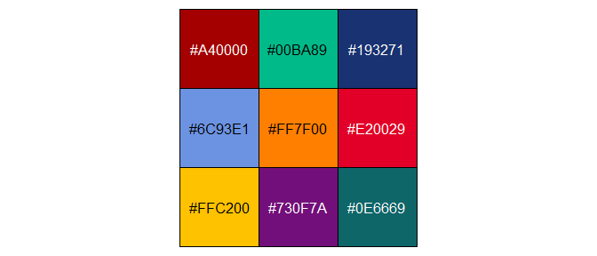

The purpose of rrplot is to provide auditors at OAG Norway with the ability to quickly make beautiful graphs with ggplot2 that are in accordance with official requirements.
Installation
You can install the development version of rrplot from GitHub with:
# install.packages("devtools")
devtools::install_github("Riksrevisjonen/rrplot")Contents
Main theme
Most of the adjustments to the graph aesthetics can be found in the theme_RR() function. This is simply added as a layer in the ggplot call.
Custom wrappers for specific geoms
The package also contains custom wrappers for the following geom functions in ggplot2:
-
geom_bar()->geom_bar_RR() -
geom_point()->geom_point_RR() -
geom_jitter()->geom_jitter_RR() -
geom_density()->geom_density_RR() -
geom_line()->geom_line_RR()
These wrappers are also added as layers in the ggplot call, along with theme_RR(). Note that theme_RR() needs to be placed before the geom wrapper (see example below). Using the custom wrappers are optional, but recommended.
Color scales
The package contains functions to determine the color palette of your graphs.
Discrete color palette functions:
-
scale_color_RR(): Used when the color argument ofaes()has been assigned. -
scale_fill_RR(): Used when the fill argument ofaes()has been assigned.
These are added as separate layers in the ggplot call and contain 9 colors:

Continuous color palette functions:
-
scale_fill_continuous_RR_red: Red continuous fill scale between#FB749Dand#B8002A -
scale_fill_continuous_RR_blueBlue continuous fill scale between#4CA4E6and#01123B -
scale_color_continuous_RR_redRed continuous color scale between#FB749Dand#B8002A -
scale_color_continuous_RR_blueBlue continuous color scale between#4CA4E6and#01123B
Examples
This is a basic example which shows you how to create a bar chart:
library(ggplot2)
library(ggthemes)
# library(rrplot)
mtcars |>
ggplot(aes(x = factor(cyl),
fill = factor(am))) +
theme_RR() +
geom_bar_RR() +
labs(title = "This is a bar chart",
subtitle = "This is a more detailed description of the underlying data",
x = "Number of Cylinders",
y = "Count",
fill = "Category") +
scale_fill_RR()Note that geom_bar_RR() accepts the same arguments as geom_bar(). Again, please note that theme_RR() needs to be placed before the geom_bar() layer.
Another example, with a scatter plot:
iris |>
ggplot(aes(x = Sepal.Length,
y = Sepal.Width,
color = Species)) +
theme_RR() +
geom_point_RR() +
labs(title = "Scatterplot",
subtitle = "This is a longer text that spans across several lines,\nproviding more information to the reader.",
x = "Sepal Length",
y = "Sepal Width") +
scale_color_RR()